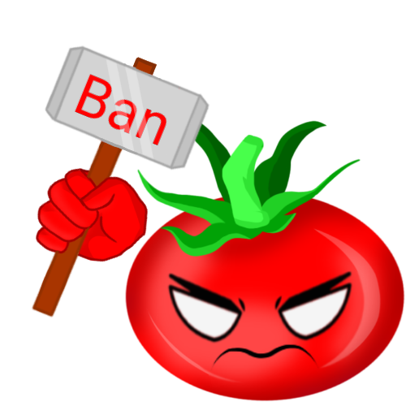

TomatenKuchen is your all-in-one Discord Bot for your Discord Server!
Hey!
Features

Advanced moderation features
Useful moderation commands and modlogs combined with Discord's native automod!
Load Discord templates
Using /template you can load Discord templates onto an existing server
Fully customizable ticket system
Multiple ticket categories, ticket embeds and advanced transcripts
Serverstats in channels and categories
In the Docs you can find tips on how to setup stats